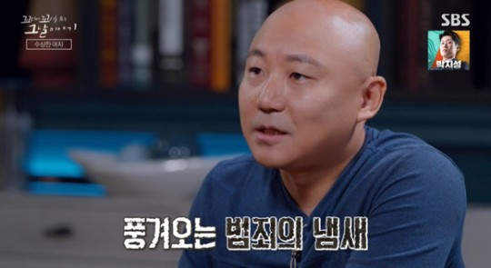

주호민 '교사 신고' 역풍..고정코너 방송 보류→'꼬꼬무' 시청 거부→新프로 편집 고심[종합]

[스포츠조선 이유나 기자] 자폐 아들의 특수 교사를 신고논란에 휩싸인 주호민이 역풍을 맞고 있다. 요즘은 웹툰보다는 방송과
유튜버로 활동 중인 주호민에게 여론이 등을 돌리면서 방송가까지 불똥이 떨어진 것. 고정 출연이 예정된 방송은 임시 보류되고,
이미 무편집으로 송출된 방송은 시청거부 운동이 일고 있다. 또 주호민이 고정멤버로 들어간 신규 프로그램의 제작진은 이미 확정된
첫방송 날짜를 재조정 해야하는지에 대한 비상이 떨어졌다. 28일 방송업계에 따르면 주호민이 패널로 출연 중인 SBS 라디오
'배성재의 텐'의 고정 코너 '말년이 편한 소인배 판단소'가 불방된다. 웹툰작가 주호민과 이말년이 고정 패널로 출연하고 있다. 두
사람은 인기 유튜버로도 활동 중이다.